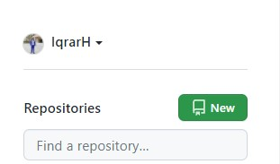
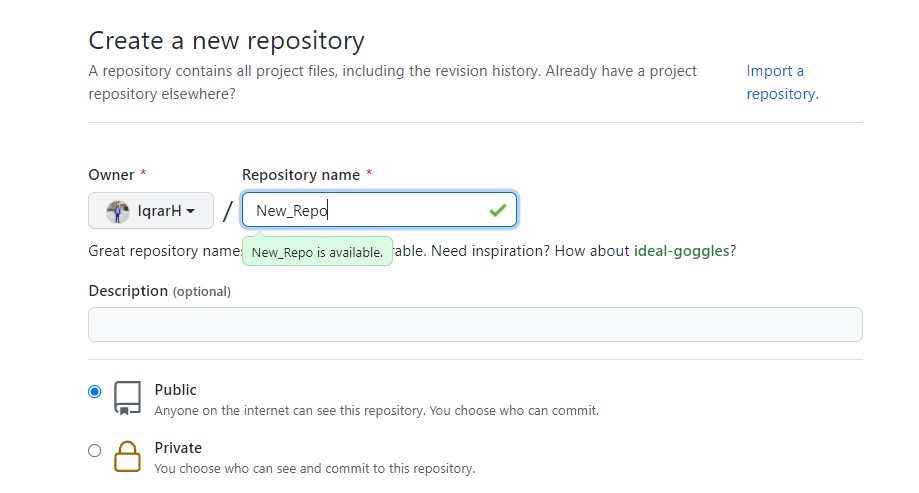
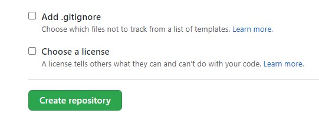
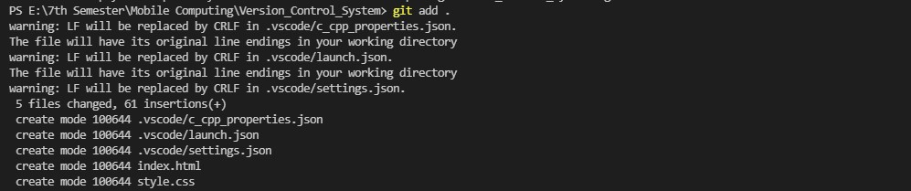
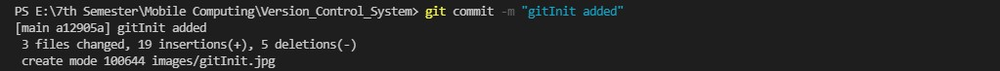
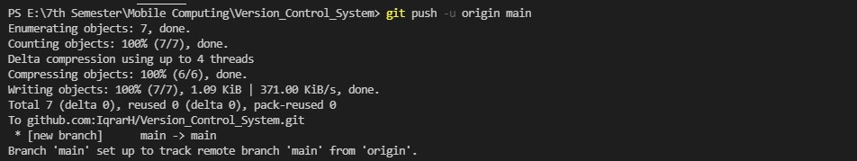
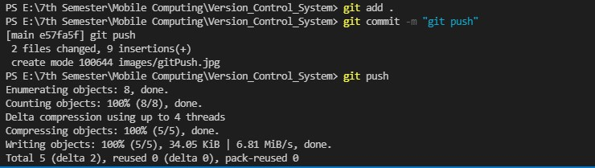

Version Control Using GitHub
In this blog we'll discuss about Version Control System GitHub. We'll learn how to create a repository
on GitHub. How to initialize your local repository to connect to the remote repository on GitHub. How to
to commit and push your code to the remote repository. What are conflicts and how to avoid and resolve those
conflicts.

First let's create a remote repository on GitHub. A repository can be either public or private.
Public Repository is visible to everyone on GitHub, whereas private repository is visible only
to you or the collaborators you add to that repository. Following Images explain the process of
creating a remote repository on GitHub.



Click on the New Button, this will take you to the 'Create a new repository' Page. Here
you can name your repository whatever you want as long as you don't have another repository with same
name. After that select if you want to keep the repository public or private. Yo can also add a readme file.
Then click the Create repository button.
We have now created a remote repositry on GitHub. The next step is to transmit the code that we have
on our local repository to this remote repository on GitHub. This process involves following four steps:
- Initializing the local repository
- Adding all the files before committing
- Commit all the added files
- Adding Origin
- Push the committed files to the remote repository
All these steps are explained below with the help of 3-D quality visuals
Initializing the local repository:
In this step the local repository is initialized with the command git init. Go to your local repository
and run this command. This command will generate a .git folder in your local repository. This
folder will contain some default git and GitHub settings.
Adding all files before commit:
In this step all the modified and new files are added to the working tree to commit. git add .
command adds all the modified and new files. If we want to add a specific file to commit we can specify the
name of that file after the git add command instead of a dot.

Commit all the added files:
In this step all the files that were added by using the git add command are commited by using the
git commit -m "appropriate message" command. This command adds all the new changes to the files.

Adding Origin:
In this step the local repository is given the address of the remote GitHub repository. This command will eventually
create a connection between the local and remote repositories. This action is performed by using
git remote add origin [repository link] command.

Push the committed files to the remote repository:
In this step all the commited files are pushed to the remote repository by using the
git push command. If we want to push our code to any branch other than master branch,
we can specify the name of the branch after the git push command.

This is how we can transfer all of our code to the remote repository on GitHub. After pushing the code
, if we make any changes all we have to do is add, commit and push the modified files and the change will
take place in the remote repository as well.
